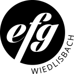
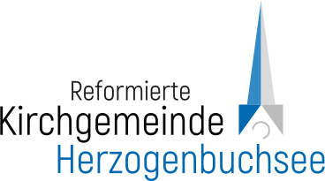

Meine ehrenamtliche Mithilfe
Neben meiner Arbeit schlage ich mein Herz für soziale Projekte. Hier siehst du, wo ich mich in den letzten Jahren eingebracht habe – von der Lagerleitung über die Jugendarbeit bis zur Gestaltung von Flyern und Social-Media-Kanälen.

Jugendgruppe Youth – EFG Wiedlisbach
YOUTH steht für die Jungen der efg – Wiedlisbach. Wir treffen uns jeden zweiten Freitag zu unterschiedlichen Events. du kannst gute Gemeinschaft erleben und mehr über den christlichen Glauben erfahren. Ab un zu wird es hier aber auch mal laut und aufregend aber auch mal gemütlich.
Four Elements
Das Four Elements Lager ist ein unvergessliches Frühlingserlebnis für Jugendliche und junge Erwachsene aus dem Oberaargau und Emmental. Hier trifft man nicht nur auf Gleichgesinnte, sondern auch auf ein engagiertes Team, das für jede Menge Sport und Spass sorgt.

Jugendgruppe Herzogenbuchsee
Die Jugendgruppe (JG) traff sich jeden Freitagabend in der Jugendwohnung im Kirchgemeindehaus. In der JG waren 15 - 25 Jungs und Mädels ab der siebten Klasse an. Das Leitungsteam hatte immer wieder neue kreative Ideen. Essen durfe auch nicht fehlen, wir kochten jedes Mal gemeinsam auf dem Grill oder am Herd. Singen, Inputs und Ausflüge gehörten immer wieder dazu.
Four Elements
Das Four Elements Lager ist ein unvergessliches Frühlingserlebnis für Jugendliche und junge Erwachsene aus dem Oberaargau und Emmental. Hier trifft man nicht nur auf Gleichgesinnte, sondern auch auf ein engagiertes Team, das für jede Menge Sport und Spass sorgt.
Jugendgruppe Herzogenbuchsee
Die Jugendgruppe (JG) traff sich jeden Freitagabend in der Jugendwohnung im Kirchgemeindehaus. In der JG waren 15 - 25 Jungs und Mädels ab der siebten Klasse an. Das Leitungsteam hatte immer wieder neue kreative Ideen. Essen durfe auch nicht fehlen, wir kochten jedes Mal gemeinsam auf dem Grill oder am Herd. Singen, Inputs und Ausflüge gehörten immer wieder dazu.

Jugendlager Heiwäg 3360
80 Kilometer entfernt ausgesetzt, ohne Handy und fast ohne Geld: Beim Jugendlager Heiwäg 3360 fanden Jugendliche in vier Tagen gemeinsam zurück – mit Karten, Lagerfeuer, unerwarteten Begegnungen und vielen Geschichten, die sie nicht vergessen werden.